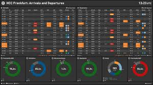
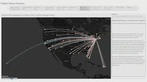
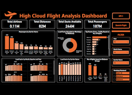

Data Cleaning in SQL
massive Data Torture
In this prtfolio we clean housing data in SQL Server, the below are the finished projects
Data analyst Skilled in Tableua,Power bi,Python and SQL by @ajlkn
In this prtfolio we clean housing data in SQL Server, the below are the finished projects
I analyze and visualize the difference in speed between male and female runners in both 50km and 50-mile races. Age Group Dominance: By focusing on 50-mile races with at least 20 participants per age group, I identify the age categories with the most successful runners. Seasonal Impact: Investigated if there's a significant difference in runner performance across seasons (summer vs. winter) in ultramarathons.
This project delves into the 2024 Population dataset, leveraging Python's rich data analysis capabilities to uncover patterns, trends, and relationships within the data. It employs various visualization techniques to gain deeper insights into population distribution, growth rates, and geographical trends.
This project explores the relationships between various movie attributes and their potential impact on gross earnings using Python's data analysis libraries.
Movie data is imported using libraries like pandas. Used Data cleaning techniques to address potential issues like missing values, duplicates, or inconsistent formats.
Created scatter plots to visually examine associations between specific features, such as budget vs. gross revenue. Choose Pearson method correlation coefficient and calculated to quantify the strength and direction of linear relationships between variables. A heatmap (using seaborn) is used to visualize the correlation matrix for all numerical features.
Wrote a condition to check if the data type of the current column is 'object' If the condition is true it converts the columns to category type Used cat.codes to assign the categorial codes back to the same column
Analyzed the correlation values and identified variables with high positive correlations to gross earnings, suggesting
potential factors influencing revenue.
Identified features with strong positive correlations to gross earnings. Gain insights into potential factors affecting
movie revenue. Understood the limitations of correlation analysis (e.g., doesn't necessarily imply causation).
This project delves into the 2024 Airline safety measures, leveraging Python's rich data analysis capabilities to uncover patterns, trends, and relationships within the data. It employs various visualization techniques to gain deeper insights into population distribution, growth rates, and geographical trends.
  This project explores the 2024 Netflix Movie, utilizing Python's robust data analysis capabilities to uncover patterns, trends, and relationships within the data. Through a range of visualization techniques, the analysis aims to provide deeper insights into population distribution, growth rates, and geographical trends.
This project explores the 2024 Netflix Movie by harnessing Python’s powerful data analysis tools to reveal patterns, trends, and relationships within the dataset. Through diverse visualization techniques, it aims to provide deeper insights into population distribution, growth rates, and geographical trends. .
TThis project examines the 2024 Netflix Movie by leveraging Python’s advanced data analysis tools to uncover global patterns, trends, and relationships within the dataset. Through a variety of visualization techniques, the analysis offers deeper insights into population distribution, growth rates, and geographical trends across different regions.
In this project, I have imported the required libraries and packages to the prediction using machine learning algorithms and visualizing the different accuracies. The project is about heart failure and it is binary classification, which means we either have 1 for death or 0 for survival. In the first part, I have analyzed the dataset that I imported from kaggle with the different exploratory analysis techniques like data visualization and dataframes with pandas, matplotlib and seaborn for both categorical and continuous variables.